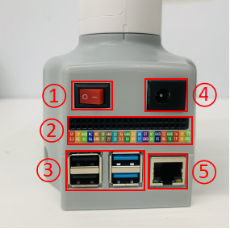

Factory firmware introduction
Only introduce the myCobot series, myPalletizer series and mechArm series, which are divided into two categories: microcontrollers and microprocessors.
- Microcontroller devices:
- myCobot 280 M5
- myCobot 320 M5
- myPalletizer 260 M5
- mechArm 27 M5
- Microprocessor devices
- myCobot 280 Pi
- myCobot 320 Pi
- mechArm 270 Pi
The difference between microprocessors and microcontrollers is mainly concentrated in three aspects: hardware structure, application field and instruction set characteristics:
Hardware structure. The microprocessor is a single-chip CPU, while the microcontroller integrates the CPU and other circuits in an integrated circuit chip to form a complete microcomputer system. In addition to the CPU, the microcontroller also includes RAM, ROM, a serial interface, a parallel interface, a timer and an interrupt scheduling circuit.
Application field. Microprocessors are usually used as CPUs in microcomputer systems. They are designed for such applications, which is also the advantage of microprocessors. However, microcontrollers are usually used in control-oriented applications, and the system design pursues miniaturization and minimizes the number of components. Microcontrollers are suitable for those occasions where input/output devices are controlled with very few components, while microprocessors are suitable for information processing in computer systems.
Instruction set characteristics. Due to different applications, the instruction sets of microcontrollers and microprocessors are also different. The instruction set of microprocessors enhances processing capabilities, giving them powerful addressing modes and instructions suitable for operating large-scale data. Microprocessor instructions can operate on nibbles, bytes, words, and even double words. By using address pointers and address offsets, microprocessors provide addressing modes that can access large amounts of data. The self-increment and self-decrement modes make it very easy to access data in units of bytes, words, or double words.
Factory firmware for microprocessor devices: python demo
Currently, the python demos available for microprocessor devices are:
Drag teaching routine drag_trial_teaching
The operator can directly drag the robot joints to move to the ideal posture, and save the action in the machine by keyboard operation. Collaborative robots are the earliest systems with this function. This teaching method can avoid various shortcomings of traditional teaching and is a technology with great application prospects in robots.
This python demo is a test tool for microprocessor devices, including the functions of calibrating the robot arm and connection detection.
Calibrate the robot arm is the prerequisite for precise control of the robot arm. Setting the joint zero position and initializing the potential value of the motor are the basis for subsequent advanced development.
Connection detection is a detection function for the connection status of the motor and Atom in the robot arm. This function is convenient for customers to troubleshoot equipment failures. In the connection detection, the device connection status of the robot arm is seen, including the connection of the servo and the communication status of the Atom. The current firmware version of the device will be displayed on M5Stack-basic in the microcontroller device.
Computer Control Currently, the 280pi robot can be remotely controlled using VNC and SSH.
General Hardware Interface Description
40PIN GPIO
Introduction
GPIO stands for General-purpose input/output
Currently, all our Raspberry Pi motherboards have a 40-pin GPIO header
Voltage Description
There are two 5V pins and two 3.3V pins on the board, as well as multiple ground pins (0V), which are not configurable. The remaining pins are general 3.3V pins, which means that the output is set to 3.3V and the input allows 3.3V
IO Output
GPIO pins designated as output pins can be set to high (3.3V) or low (0V)
IO Input
GPIO pins designated as input pins can be read as high (3.3V) or low (0V). This is easier to do using internal pull-up or pull-down resistors. Pins GPIO2 and GPIO3 have fixed pull-up resistors, but for other pins this can be configured in software
PWM (Pulse Width Modulation)
All pins can use software controlled PWM
GPIO12, GPIO13, GPIO18, GPIO19 can use hardware controlled PWM
SPI
SPI stands for Serial Peripheral Interface, which is a high-speed, full-duplex, synchronous communication bus
SPI0: MOSI (GPIO10); MISO (GPIO9); SCLK (GPIO11); CE0 (GPIO8), CE1 (GPIO7)
SPI1: MOSI (GPIO20); MISO (GPIO19); SCLK (GPIO21); CE0 (GPIO18); CE1 (GPIO17); CE2 (GPIO16)
IIC
I2C, the full name of which is Integrated Circuit Bus in Chinese, is a serial communication bus that uses a multi-master-slave architecture
Data (GPI02), clock (GPI03)
EEPROM data: (GPIO0), EEPROM clock (GPI01)
Serial
Serial port is the abbreviation of serial port, also known as serial communication interface or COM interface
TX (GPIO14), RX (GPIO15)
python control pin output
import RPi.GPIO as GPIO
import time
# Initialization
GPIO.setmode(GPIO.BCM)
GPIO.setup(20, GPIO.OUT)
GPIO.setup(21, GPIO.OUT)
# High level
GPIO.output(20, 0)
GPIO.output(21, 0)
# Wait for 2 seconds
time.sleep(2)
# Low level
GPIO.output(20, 1)
GPIO.output(21, 1)
- **The definitions of each GPIO interface are shown in the following table:
| Label | Signal Name | Type | Function | Remarks | ||||||||||||||||||||||||||||||||||||||||||||||||||||||||||||||||||||||||||||||||||||
|---|---|---|---|---|---|---|---|---|---|---|---|---|---|---|---|---|---|---|---|---|---|---|---|---|---|---|---|---|---|---|---|---|---|---|---|---|---|---|---|---|---|---|---|---|---|---|---|---|---|---|---|---|---|---|---|---|---|---|---|---|---|---|---|---|---|---|---|---|---|---|---|---|---|---|---|---|---|---|---|---|---|---|---|---|---|---|---|---|
| 5V | 5V | P | DC 5V | |||||||||||||||||||||||||||||||||||||||||||||||||||||||||||||||||||||||||||||||||||||
| 5V | 5V | P | DC 5V | |||||||||||||||||||||||||||||||||||||||||||||||||||||||||||||||||||||||||||||||||||||
| GND | GND | p | GND | |||||||||||||||||||||||||||||||||||||||||||||||||||||||||||||||||||||||||||||||||||||
| NC | NC | - | - | Not supported yet | ||||||||||||||||||||||||||||||||||||||||||||||||||||||||||||||||||||||||||||||||||||
| NC | NC | - | - | Not supported yet | ||||||||||||||||||||||||||||||||||||||||||||||||||||||||||||||||||||||||||||||||||||
| 18 | GPIO18 | I/O | GPIO18 | |||||||||||||||||||||||||||||||||||||||||||||||||||||||||||||||||||||||||||||||||||||
| GND | GND | p | GND | |||||||||||||||||||||||||||||||||||||||||||||||||||||||||||||||||||||||||||||||||||||
| 23 | GPIO23 | I/O | GPIO23 | 24 | GPIO24 | I/O | GPIO24 | GND | GND | p | GND | 25 | GPIO25 | I/O | GPIO25 | GND | GND | p | GND | 12 | GPIO12 | I/O | GPIO12 | GND | GND | p | GND | 16 | GPIO16 | I/O | GPIO16 | GPIO21 | I/O | GPIO21 | 3.3 | 3.3V | P | DC 3.3V | NC | NC | - | - | Not supported yet | 03 | GPIO3 | I/O | GPIO3 | GPIO27 | I/O | GPIO27 | 22 | GPIO22 | I/O | GPIO22 | 3.3 | 3.3V | P | DC 3.3V | 10 | GPIO10 | ||||||||||||||||||||||||||||
| 11 | GPIO11 | I/O | GPIO11 | |||||||||||||||||||||||||||||||||||||||||||||||||||||||||||||||||||||||||||||||||||||
| GND | GND | p | GND | |||||||||||||||||||||||||||||||||||||||||||||||||||||||||||||||||||||||||||||||||||||
| 00 | GPIO0 | I/O | GPIO0 | |||||||||||||||||||||||||||||||||||||||||||||||||||||||||||||||||||||||||||||||||||||
| 05 | GPIO5 | I/O | GPIO5 | |||||||||||||||||||||||||||||||||||||||||||||||||||||||||||||||||||||||||||||||||||||
| 06 | GPIO6 | I/O | GPIO6 | |||||||||||||||||||||||||||||||||||||||||||||||||||||||||||||||||||||||||||||||||||||
| 13 | GPIO13 | I/O | GPIO13 | |||||||||||||||||||||||||||||||||||||||||||||||||||||||||||||||||||||||||||||||||||||
| 19 | GPIO19 | I/O | GPIO19 | |||||||||||||||||||||||||||||||||||||||||||||||||||||||||||||||||||||||||||||||||||||
| 26 | GPIO26 | I/O | GPIO26 | |||||||||||||||||||||||||||||||||||||||||||||||||||||||||||||||||||||||||||||||||||||
| GND | GND | p | GND |
Note:
I: Input only.
I/O: This function signal contains input and output combination.
When the tube corner is set as an output, it will output a voltage of 3.3V.
The pull current of a single tube corner decreases as the number of pins increases, from about 40mA to 29mA.
If a GPIO is set to output mode, it outputs a high-level signal, and the circuit connection is shown in Figure 2.1.5.2-3, and the LED light will light up.
- The other function tables of the function interface are shown in Figure 2.1.5.2-4. When other functions are used, the IO function is not available.


3.2 Introduction to the base interface of the robot
- A. The front of the base is shown in the figure:

Front of the base
- ① Switch button
- ② Function interface group 1
- ③ USB2.0, USB3.0
④ Power DC interface -⑤ Network port
B. The side of the base is shown in the figure:

Side of the base
- ① SD card slot
- ② Type C
- ③ HDMI
- ④ Audio interface
Detailed description of the robot base interface
A. Power DC interface: Use a DC power socket with an outer diameter of 6.5mm and an inner diameter of 2.0mm; the 12V 5A DC power adapter provided by the manufacturer can be used to power myCobot280.
B. Switch button: Red is the switch, I is for power on, and O is for power off.
C. USB2.0 interface: an interface for data connection based on serial bus standard 2.0; users can use the USB interface to copy program files, or use the USB interface to connect peripherals such as mouse and keyboard.
D. USB3.0 interface (blue): an interface for data connection based on serial bus standard 3.0; users can use the USB interface to copy program files, or use the USB interface to connect peripherals such as mouse and keyboard.

- E. Network port: a port for network data connection. Users can use the Ethernet interface for communication and interaction between the PC and the robot system, or for Ethernet communication with other devices.

F. HDMI interface: The interface is HDMI D-type interface, connected to the display. HDMI interface 2 has priority, and HDMI interface 1 is recommended.
G. Type C interface: can be used to connect and communicate with the PC and update the firmware.
H. SD card slot: SD card can be inserted and removed. The size of the SD card is 32mm×24mmx2.1mm